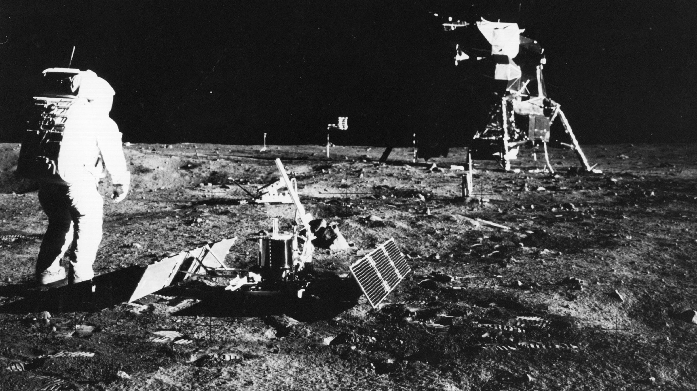
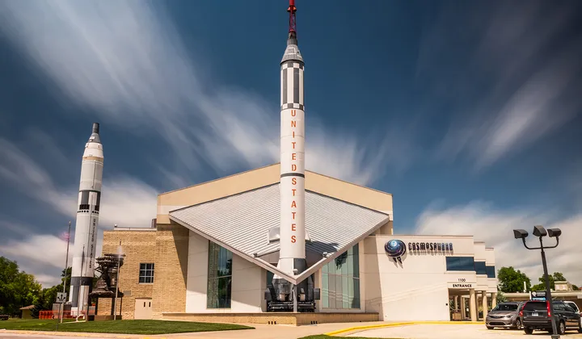

We are the leading space exploring agency
Cosmic
Frontiers
Mission

Mission Statement: "To explore the cosmos, pushing the boundaries of human knowledge, and inspiring the next generation of space explorers."
- Explore the cosmos, advancing human knowledge and inspiring future space explorers.
- Push boundaries, unlocking the mysteries of the universe through relentless curiosity.
- Foster collaboration among nations for mutual space exploration goals.
- Innovate with cutting-edge technology to achieve breakthroughs in space exploration.
- Prioritize responsible stewardship of space resources and environmental preservation.
- Ignite passion for science and technology in future generations.
- Lead humanity into a new era of space exploration, making the wonders of the cosmos accessible to all.
History
 Formation (2002 - 2004):Cosmic Frontiers emerged in the early 21st century, driven by global curiosity about space. Formed through collaboration among scientists and engineers, it aimed to push space exploration boundaries.
Milestones (2007 - 2020):The agency achieved significant milestones:
- Launching Kepler Space Telescope, transforming understanding of exoplanets.
- Exploring outer solar system with Voyager and New Horizons missions.
- Establishing international partnerships for joint missions and research.
Challenges (2020 - Present):
Cosmic Frontiers faced technical, budgetary, and geopolitical challenges. Yet, it persevered, emerging stronger each time.
Cosmic Frontiers envisions humanity's extended presence beyond Earth, with Mars colonization and lunar exploration. Committed to exploration and inspiration, it aims to unlock cosmic mysteries and inspire future generations.
About the Agency

For inquiries, collaborations, or media requests
please contact us at:
Cosmic Frontier Space Agency
New Horizons City, Earth
Email: info@cfsa.space
Phone: +1 (555) 123-4567
Join us to be the part of an incredible mission!! , Unveil the Mysteries of Space with Cosmic Frontiers.
Apply now